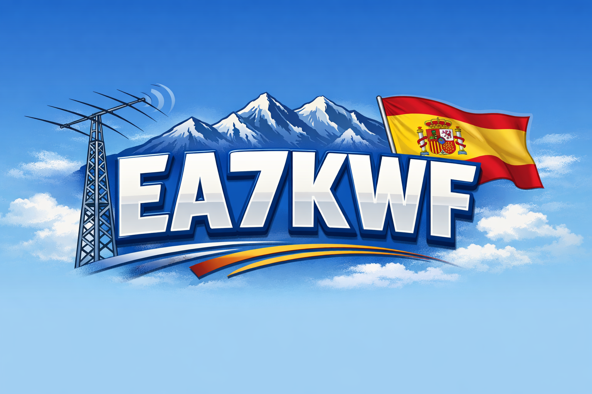
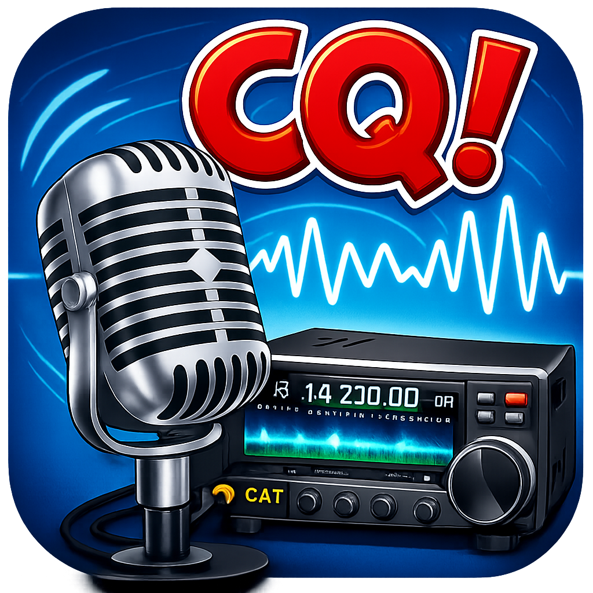

RX / TX · 01
Hermes Lite
SDR utilizado para operación y experimentación en HF.

Radio, electrónica y experimentación desde Salas, Asturias. HF · WSPR · SDR · Satélites · Proyectos Maker
Una afición que une radio, electrónica, informática y construcción de proyectos propios.
Mi nombre es Juan Manuel y soy radioaficionado desde el año 2024.
Me considero un entusiasta del mundo maker, autodidacta y apasionado por la radio y la electrónica. Mis inicios se remontan a mi adolescencia, cuando operaba en la banda de 11 metros.
Tras un largo periodo alejado de la radio, en 2024 decidí retomar esta afición y obtener oficialmente mi licencia de radioaficionado.
Soy de nacionalidad argentina y actualmente resido en España, en el concejo de Salas, Asturias.
Equipos y antenas que forman parte de la estación EA7KWF.
SDR utilizado para operación y experimentación en HF.
Amplificador integrado en la estación para trabajo en HF.
Transceptor utilizado en la estación.
Amplificador RF como parte del sistema de transmisión.
Antena directiva para la banda de 10 metros.
Antena utilizada para las bandas de 20 y 40 metros.
Una nueva parte de la estación dedicada al seguimiento y operación de satélites con control CAT.
Hardware y software creado para automatizar y ampliar la estación.
Control de rotor de antena basado en ESP32 y comunicación por red.
Ver en GitHub →Automatización y control remoto para la selección de antenas.
Ver en GitHub →Herramientas de automatización desarrolladas para la estación.
Ver en GitHub →Integración del Yaesu FTX-1 para seguimiento Doppler independiente en RX y TX desde Android.
En desarrolloExperimentación con SDR, recepción de señales y telemetría de satélites.
Arduino, ESP32, control de radio y soluciones construidas para uso propio en la estación.
El entorno desde el que opera la estación EA7KWF.

Vista mundial de actividad y propagación mediante WSPR.